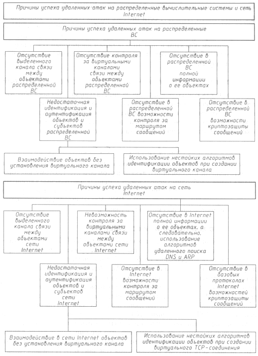

Безопасность >>>
АТАКА НА INTERNETПричины успеха удаленных атак в сети Internet
Internet представляет собой распределенную вычислительную систему, инфраструктура которой общеизвестна и хорошо описана. Поэтому рассмотренные в предыдущем разделе причины успеха удаленных атак на РВС можно спроецировать на Internet и сделать вывод о существовании в данной Сети серьезных пробелов в обеспечении безопасности. Внимательный читатель, изучая предыдущие разделы, уже, наверное, мысленно осуществил подобную проекцию и обратил внимание на то, как недостатки, присущие абстрактной распределенной ВС, легко обнаруживаются в реальной РВС - Internet. Отсутствие выделенного канала связи между объектами сети InternetГлобальная сеть не может быть построена по принципу прямой связи между объектами, поскольку для каждого объекта невозможно обеспечить выделенный канал связи с любым другим объектом. Поэтому в Internet связь осуществляется через цепочку маршрутизаторов, а следовательно, сообщение, проходя через большое количество промежуточных подсетей, может быть перехвачено. Также к Internet подключено большое число локальных Ethernet-сетей, использующих топологию "общая шина"; в сетях с такой топологиеи несложно программно осуществлять перехват сообщений. Однако данный недостаток присущ скорее не Internet, a Ethernet. Недостаточные идентификация и аутентификацияВ базовых протоколах обмена идентификация и аутентификация объектов практически отсутствуют. Так, например, в прикладных протоколах FTP, TELNET, РОРЗ имена и пароли пользователей передаются по сети в виде открытых незашифрованных сообщений (см. главу 4). В существующем стандарте IPv4 протокол сетевого уровня IP не предусматривает никакой идентификации и аутентификации объектов (за исключением IP-адреса отправителя, подлинность которого, в свою очередь, невозможно подтвердить). Все проблемы с идентификацией разработчики переложили на следующий, транспортный, уровень, за который отвечают протоколы UDP и TCP. Так как протокол UDP не содержит в себе никакой дополнительной идентифицирующей информации, единственным протоколом, призванным обеспечить безопасность в Internet, является TCP, создающий виртуальный канал. Взаимодействие в сети Internet объектов без установления виртуального канала Одной из особенностей Internet является взаимодействие объектов без создания виртуального канала. Очевидно, что разработчики планировали подобное взаимодействне в том случае, если обеспечения его безопасности не требуется. Однако и для управляющих ICMP-сообщений, и для DNS-запросов используется связь без ВК, что приводит к возможности осуществления атак, рассмотренных в главе 4. Использование нестойких алгоритмов идентификации объектов при создании виртуального TCP-соединения Как уже подчеркивалось, протокол TCP является единственным базовым протоколом транспортного уровня, в функции которого заложена защита соединения. Однако использование простейшего алгоритма идентификации объектов при создании виртуального TCP-канала (см. раздел "Подмена одного из субъектов TCP-соединения в сети Internet" в главе 4), особенно при условии применения в сетевых ОС простейших времязависимых законов генерации TCP-идентификаторов (ISN), сводит на нет все попытки обеспечения идентификации канала и объектов при их взаимодействии по протоколу TCP. Невозможность контроля за виртуальными каналами связиВ существующем стандарте сети Internet нельзя обеспечить контроль за сетевыми соединениями, так как у одного субъекта сетевого взаимодействия существует возможность занять неограниченное число каналов связи с удаленным объектом и при этом остаться анонимным (см. главу 5). Из-за этого любой хост в сети Internet может быть полностью парализован (см. главу 4). Отсутствие возможности контроля за маршрутом сообщенийНевозможность контроля в Internet за виртуальными каналами обусловлена отсутствием в Сети контроля за маршрутом сообщений, а именно: в существующем стандарте IPv4 нельзя по пришедшему на хост сообщению определить путь, через который оно прошло, а следовательно, невозможно проверить подлинность адреса отправителя (см. главу 4). Отсутствие полной информации об объектах InternetОчевидно, что в глобальной сети невозможно обеспечить на каждом ее объекте наличие информации о любом другом объекте. Поэтому, как говорилось ранее, необходимо использовать потенциально опасные алгоритмы удаленного поиска. В сети Internet используются, по меньшей мере, два алгоритма удаленного поиска: ARP и DNS. Удаленные атаки, направленные на эти протоколы, рассмотрены в главе 4.Отсутствие криптозащиты сообщенийВ существующих базовых протоколах семейства TCP/IP, обеспечивающих взаимодействие на сетевом и транспортном уровнях, нс предусмотрена возможность шифрования сообщений, хотя очевидно, что добавить ее в протокол TCP не составляло труда. Разработчики решили переложить задачу криптозащиты на протоколы более высоких уровней, например прикладного уровня. При этом базовые протоколы прикладного уровня (FTP, TELNET, HTTP и др.) также не предусматривали никакого шифрования сообщений. Только не так давно появился общедоступный прикладной протокол SSL, встроенный в Netscape Navigator, позволяющий как надежно зашифровать сообщение, так и подтвердить его подлинность. В заключение хотелось бы заметить, что все описанные выше причины, по которым возможна успешная реализация угроз безопасности РВС, делают сеть Internet небезопасной (см. рис. 6.1). А следовательно, все пользователи Сети могут быть атакованы в любой момент.
 Рис. 6.1. Причины успеха удаленных атак
|